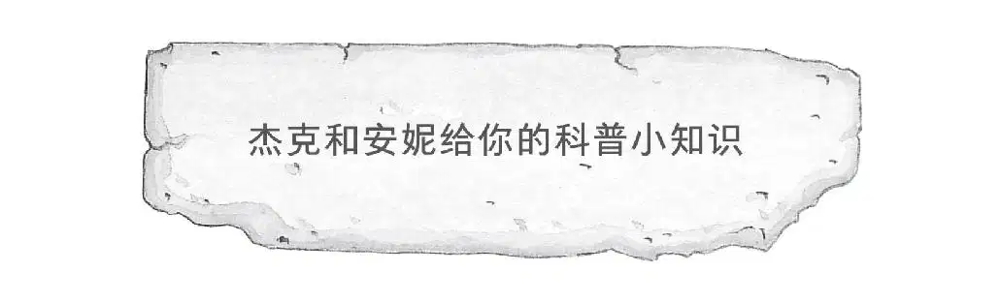
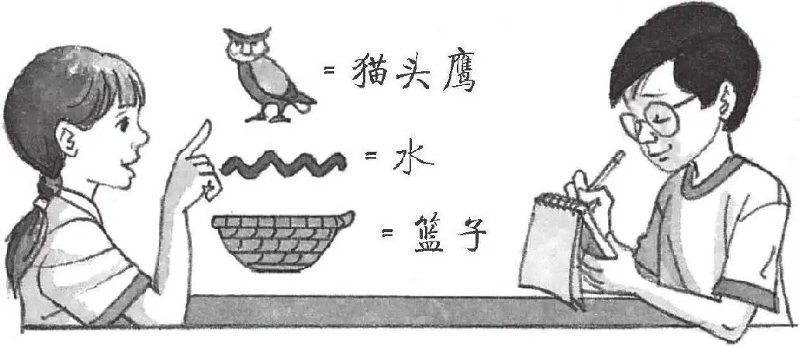

1.古埃及是四大文明古国之一。5000多年前，古埃及人发明了象形文字。目前发现的古埃及象形文字共有700多个。
2.古埃及人是最早养宠物的民族之一。他们把宠物看作家庭的一员。曾经发生过这样一件事，有一家人的猫咪死了，他们家里的所有人都剃光了眉毛，以示哀悼。

3.对古埃及人来说，葬礼是一件大事，因为他们要把死者安全地送往“来世”。在木乃伊被送进坟墓的那一天，死者的家人和朋友会组成浩浩荡荡的送葬队伍，从死者的住所出发，像游行一样。通常情况下，送葬的队伍由家人、朋友、祭司和仆人组成，当然人数越多越好，因此死者的家属有时会花钱雇人。